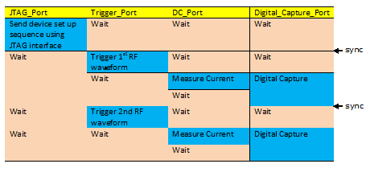

CCT Multiport Sequencer Synchronizer API
The CCT Multi-port Sequencer Synchronizer API is an API set that is used to program digital multi-port bursts and handle synchronization across ports.
Key features
The key features of the API set include:
- Automatically maintain synchronization across ports by synchronizing ports with different
vector/cycle lengths or execution time before the start of the next label. You can synchronize:
- Flat patterns at different ports
- PA transaction sequences and normal patterns
- Execute the following read/write actions on a DUT using a predefined protocol (You can use
the protocol-aware method):
- Write to
- read to
- read from
You can specify different values for different sites.
- Insert sequencer‑controlled DC tests into the pattern (You must assign a synchronization point to align with other ports).
- Insert DC Dynamic tests into the pattern and maintain synchronization with the patterns of other ports.
- Generate a trigger pattern or a sequence of PA transactions according to an analog sequencer group or an analog sequence program at a predefined port, and then synchronize it with patterns at other ports.
- Insert a digital capture pattern into the multiport burst pattern, and automatically generate the VECTOR_VARIABLE for the digital capture pattern.
- Provides unified wrapper APIs for protocol activities, using PA.
- Provides smooth switching between engineering modes and production modes.
- Visualizes the multiport assembly.
- Create and insert a flat label to a port of multi-port burst, and generate and attach a protocol-type label at the HIF port of a multi-port burst.
- Supports multiple digital captures on different digital capture ports (DigitalCapturePort).
Supported hardware
For normal digital pattern, the API can be used with all smart scale digital cards.
The API does not require a dedicated license. However, if you want to attach "protocol type labels" in the multiport burst, a protocol-aware license is required.
Synchronization across ports in a multi-port burst
To synchronize across ports in a multi-port burst, you must first use APIs to create the flat pattern. Next, you add flat labels to a port of a multi-port burst, or attach protocol type labels to a multi-port burst. The length or execution time of each port’s labels is recorded and then the execution time differences between ports is calculated.
If synchronization is required, a label of "repeating" idle vectors (for normal ports) or IDLE command (for transaction port) can be added to those ports with short execution time, ensuring the sequencer of each port ends at the same time.
After the synchronization, the next vector of each port starts simultaneously.
The following diagram illustrates two synchronization points:

A multi-port burst is assigned so that the single-port patterns, and protocol-type labels can be added to any port of the burst. It is not necessary that the multi-port burst exists when it is assigned. The synchronized port and the single-port labels can be added later.
The ports that need to be synchronized must be be registered. The CCT Multi-port Sequencer Synchronizer API can trace the execution time of labels at each registered port by querying the cycles and period of each label.
The synchronization activity is user-initiated:
You might require synchronization across all registered ports or partial ports. If the execution time of each port is T@Port<i>, and the maximum execution time is Tmax.
The CCT Multi-port Sequencer Synchronizer API appends one of the following labels to those ports that exhibit an execution time T@Port<i> of less than Tmax:
- Dummy cycles (for normal patterns).
- An IDLE command (for PA ports) which exhibit an execution time of (deltaT@Port<i> = Tmax-T@Port<i>).
User can assign a synchronization point to any port with the specified time point Tsync.
The CCT Multi-port Sequencer Synchronizer API appends one of the following labels to the assigned ports that exhibit an execution time T@Port<i> of less than Tsync.
- Dummy cycles (for normal patterns).
- An IDLE command (for PA ports) which exhibit an execution time of (deltT@Port<i> = Tsync-T@Port<i>).
After the synchronization point, the labels newly added to the registered ports start the next vector of each port simultaneously.
Prerequisites
Before you can use the CCT Multi-port Sequencer Synchronizer API, make sure that the following conditions are met:
- Digital pattern must be multi-port based
- Timing set must be multi-port based
- Must be used in Concurrent Test Framework environment
Limitations
- Ports containing CTIM/CLEV in the digital pattern are not supported.
- D2S is not supported
- BADC is not supported
Functional changes
- Introduced in SmarTest 7.3.2